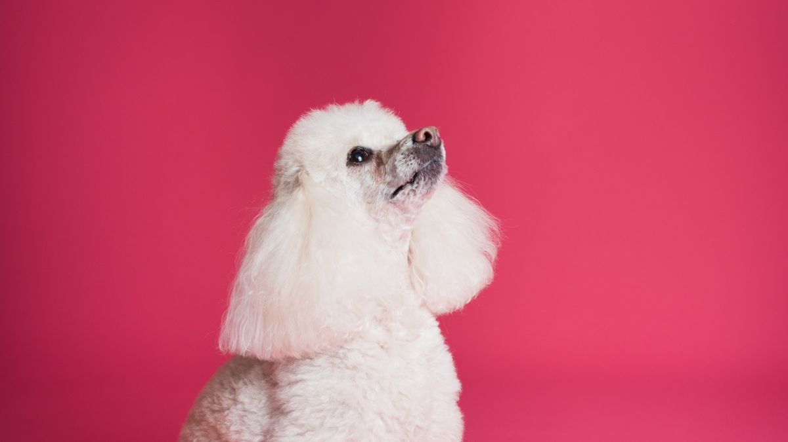
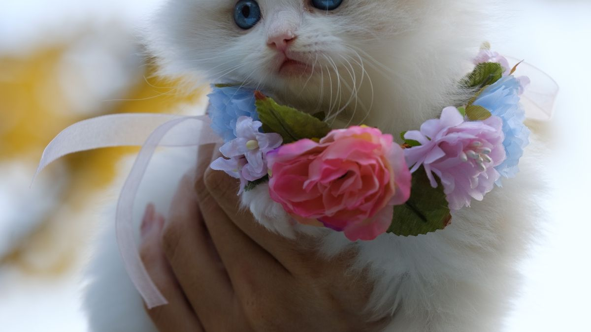

왜 쉬는 시간이 필요할까
과한 자극은 코르티솔이 2~3시간 높게 유지될 수 있습니다. 산책 15분 직후 15분 조용한 공존이 심박 안정에 도움이 되는 경우가 관찰됩니다.

실천 예시
- 같은 방 조용히 10분(휴대폰 무음)
- 가벼운 빗질 3분, 싫으면 중단
- 간식 없이 옆에 누워 있기 허용
- 큰 소리·갑작스러운 일어남 자제
처음에는 3분만 시도하세요. 반려동물이 멀어지면 거리를 두고, 옆에 앉으면 1분 더 유지합니다. 매일 같은 시간(저녁 9시 등)이 신호가 쌓이기 쉽습니다.
신호 읽기
멀리 가거나 숨으면 거리 존중. 다가와 옆에 누우면 현재 페이스 유지. 억지로 안기는 3분 만에 끝내는 것이 30분 억지보다 낫습니다.

놀이와의 균형
조용한 시간은 놀이의 대체가 아니라 마무리입니다. 아침 10분+저녁 15분이면 하루 25분, 주 5일만 해도 충분한 출발점입니다.
주말에만 길게 쉬기보다 평일 10분이 더 효과적인 경우가 많습니다. 놀이 직후가 아니라 산책·식사 후 15분 뒤가 진정에 유리합니다.
실전 적용 노트
함께 쉬는 시간은 '놀이의 반대'가 아니라 '접촉의 질을 바꾸는 시간'입니다. 하루 10분, TV·휴대폰을 내려놓고 같은 공간에 앉는 것만으로도 충분합니다.
쓰다듬기는 머리·등·턱 등 개체가 편한 부위만 합니다. 억지로 안아 올리면 조용한 시간이 스트레스가 됩니다.
호흡이 빠르거나 귀가 뒤로 가면 30초 뒤 거리를 둡니다. '더 오래'보다 '더 자주'가 목표입니다.
고양이는 시선을 오래 맞추지 않는 편이 편안한 경우가 많습니다. 옆에 앉아 각자 쉬는 것도 좋습니다.
아이에게는 '조용히 앉기 5분' 챌린지로 연결하면 가족 루틴이 됩니다.
취침 30분 전 조용한 시간을 고정하면 밤 활동 감소에 도움이 되는 집이 있습니다.
소음·향이 강한 청소·요리 시간에는 함께 쉬기보다 별도 휴식 공간이 나을 수 있습니다.
매일 하지 못해도 주 3회만 지켜도 관계 유지에 도움이 됩니다.
조용한 시간 직후 짧은 놀이 2분으로 전환하면 하루 리듬이 자연스럽습니다.
이번 주 함께 쉬는 시간 체크리스트입니다. 하루 10분이면 충분합니다.
- TV·휴대폰을 내려놓고 같은 공간에 10분 앉았습니다.
- 쓰다듬기는 개체가 편한 부위만 했습니다.
- 호흡·귀 신호가 불편하면 30초 뒤 거리를 뒀습니다.
- 고양이는 옆에 앉아 각자 쉬는 시간도 허용했습니다.
- 취침 30분 전 조용한 시간을 고정했습니다.
- 청소·요리 소음 시간에는 별도 휴식 공간을 썼습니다.
- 주 3회 이상 함께 쉬기를 시도했습니다.
- 조용한 시간 후 2분 가벼운 놀이로 전환했습니다.
함께 쉬는 시간은 놀이의 점수가 아니라, 서로의 신호를 읽는 연습입니다.
함께 쉬는 시간은 하루 10분, TV·휴대폰을 내려놓고 같은 공간에 앉는 것만으로도 충분합니다. 쓰다듬기는 편한 부위만, 불편 신호면 30초 뒤 거리를 두세요. 고양이는 옆에 앉아 각자 쉬기도 좋고, 취침 30분 전 고정하면 밤 활동 감소에 도움이 됩니다. 주 3회만 지켜도 관계 유지에 도움이 됩니다.
함께 쉬는 10분 후 일지에 '오늘 편안해 보였는지' 한 줄만 적어도, 다음 주 접촉 방식 조절에 도움이 됩니다.
마무리로, 이번 주에는 체크리스트 3개만 골라 2주 반복해 보세요. 작은 성공이 쌓이면 나머지는 자연스럽게 늘어납니다.
기록이 쌓이면 병원·상담 때 설명이 쉬워집니다. 한 줄 메모라도 같은 항목으로 이어 쓰는 것이 핵심입니다.
완벽한 루틴보다 80% 지켜지는 루틴이 오래 갑니다. 안 된 날은 원인 한 줄만 적고 다음 주에 조정하세요.
오늘 당장 하나만 고른다면, 체크리스트 맨 위 항목부터 시작해 보세요. 나머지는 다음 주로 미뤄도 괜찮습니다.
가족이 함께 돌본다면, 누가 했는지 체크박스 한 칸만 추가해도 누락·중복이 줄어듭니다.
검색으로 답을 찾기 전에 7일 메모를 먼저 정리해 보세요. 증상 설명이 훨씬 빨라지는 경우가 많습니다.
새 용품·새 사료·새 루틴은 동시에 바꾸지 않습니다. 한 가지만 바꾸고 5일 관찰하는 편이 안전합니다.
이번 달 목표는 '매일 완벽'이 아니라 '이번 주 3회 성공'입니다. 0회에서 1회로 바뀌는 것만으로도 충분한 진전입니다.
스트레스 신호(회피·짖음·숨 가쁨)가 보이면 시간을 반으로 줄이세요. 짧게 자주 성공하는 쪽이 학습에 유리합니다.
계절·이사·손님처럼 환경이 바뀌는 주에는 루틴을 단순화하세요. 필수 3개만 지키고 나머지는 다음 주로 미뤄도 됩니다.
사진 한 장이 긴 설명보다 나을 때가 있습니다. 같은 조명·각도로 남기면 변화 비교가 쉬워집니다.
병원 방문 전에는 '언제부터·얼마나 자주·무엇이 함께 변했는지' 3가지만 정리해도 상담이 수월해집니다.
루틴이 무너진 날을 실패로 보지 말고, 겹친 일정(야근·손님·이사)을 한 줄로 적어 두세요. 다음 주 조정 근거가 됩니다.
정리하며
함께 있는데 손을 안 대면 '무관심'이 아니라는 걸 알게 된 게 최근이었습니다.
저는 조용한 시간을 '게으름'이 아니라 '관계의 저속 모드'로 부릅니다. 빠르기만 좋은 건 아니니까요.
저녁에 휴대폰 무음 10분, 같은 방에만 있어 보세요. 손을 뻗지 않아도 관계 신호가 쌓입니다.
초보자가 자주 실수하는 포인트
- 쉬는 시간에도 장난감 던지기
- 다가오지 않는데 10분 안기
- 휴식 매트 침범·깨우기
- 조용한 시간 0분·놀이만 1시간
- 활동·수면 변화 무시
체크리스트
- 산책·놀이 후 15분 조용히
- 휴대폰 무음 10분
- 접촉은 3분·거부 시 중단
- 아침 10분+저녁 15분
- 활동·수면 패턴 메모
자주 묻는 질문
- 가만히 있어도 관계가 좋아지나요?
- 예측 가능한 저소음 공존은 스트레스를 줄이는 신호가 될 수 있습니다. 손을 뻗지 않아도 됩니다.
- 안기려 하면 거부하는데 어떻게 하나요?
- 3분 접촉 후 중단하세요. 거부 신호를 존중하면 다음에 다가오는 빈도가 늘어나는 경우가 있습니다.
이 글은 초보자 기준으로 이해하기 쉽게 정리되었으며, 내용은 운영 과정에서 순차적으로 보완될 수 있습니다. 수의사 등 전문가의 진단·처치를 대체하지 않습니다.